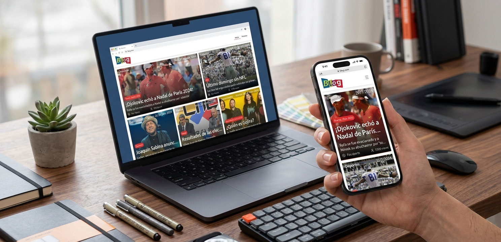
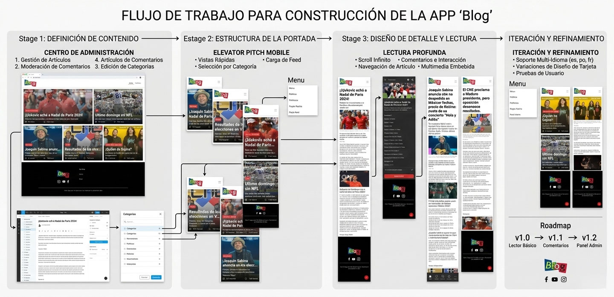

Blog Mobile Prototype
Diseño de experiencia editorial mobile-first centrado en legibilidad, navegación intuitiva y consumo ágil de contenido.
Proyecto de prototipo enfocado en replantear la experiencia de blog desde una perspectiva completamente móvil, priorizando jerarquía visual, interacción táctil y claridad estructural.
UX / UI Designer
Mobile UX · Prototipado
2024

Contexto
El consumo de contenido digital ocurre mayoritariamente en dispositivos móviles. Sin embargo, muchos blogs continúan estructurándose desde una lógica desktop adaptada, generando fricción en navegación y lectura.
Este proyecto buscó replantear la experiencia desde una perspectiva mobile-first, diseñando una interfaz pensada específicamente para interacción táctil y lectura prolongada.
El Reto
- ✔ Facilitar la lectura continua en pantalla pequeña
- ✔ Simplificar exploración de artículos
- ✔ Mantener claridad visual sin saturación
- ✔ Optimizar navegación para uso con una sola mano
- ✔ Establecer jerarquía tipográfica sólida
El principal desafío fue equilibrar contenido editorial denso con una interfaz limpia y ligera.

Proceso
Arquitectura de Información
Se definió una estructura simple y escalable: home con artículos destacados, listado general, vista individual y categorización clara del contenido.
Sistema Visual
Se desarrolló un sistema basado en tipografía altamente legible, espaciado generoso y componentes modulares reutilizables.
El uso de tarjetas permitió organizar contenido sin saturar la pantalla.
Prototipado
El prototipo fue desarrollado en Figma, incluyendo interacciones de navegación, estados activos y simulación de flujo de lectura.
El enfoque estuvo en validar experiencia antes de cualquier desarrollo técnico.
Resultado
- ✔ Experiencia mobile fluida
- ✔ Lectura cómoda y estructurada
- ✔ Navegación intuitiva
- ✔ Diseño limpio y escalable
- ✔ Base sólida para desarrollo futuro
El proyecto demuestra la importancia de diseñar específicamente para el contexto móvil en lugar de adaptar estructuras desktop.
Conclusión
Blog Mobile Prototype fue un ejercicio centrado en experiencia real de usuario en dispositivos móviles.
Reforzó principios clave de diseño editorial digital, jerarquía tipográfica y usabilidad táctil.
Un proyecto enfocado en UX estratégico y diseño centrado en contexto de uso.